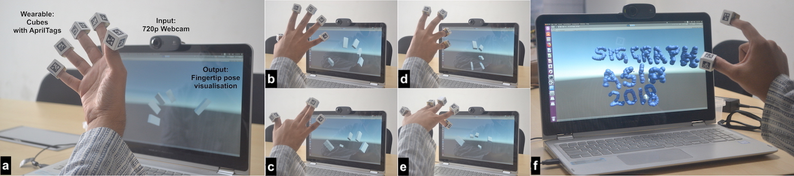

Abstract
It is natural to use our hands for interacting with a virtual world, but this remains to be widely available. The Leap Motion controller has brought 3D hand tracking to consumers, but its high cost prohibits its mass adoption, especially for users in developing countries. To facilitate mass adoption, we present a do-it-yourself wearable that costs only 2 USD, and which coupled with a webcam, can provide 6-DoF(degrees of freedom) per fingertip tracking in real-time. We also present a novel solution to the pose ambiguity problem of a single square planar fiducial marker in monocular view.

Our Method
Our Wearable
Our wearable consists of multiple cubes textured with Apriltag binary fiducial markers. These cubes can be worn on the fingertips by either directly inserting the fingers into them or by sticking the cubes on gloves and then wearing them. We created them in a D.I.Y. fashion by printing the unfloded 3D model of each cube on regular paper, sticking it onto cardboard, then cutting, folding and gluing it into a cube. We chose cubes as our wearables as Apriltags need to be planar and we wanted to maximize the number of visible markers, without making the wearable cumbersome to wear on the fingertips. An alternate construction of the wearable could be 3D-printing the cubes and gluing the markers
Our Algorithm
To find the 6-DoF pose for each cube, we run the Apriltags detector on each frame of a webcam feed, which gives the unique ID number and pose of each visible marker. Now for each cube, if more than one marker is visible, we use the pose of the marker with maximum projected area onto the image plane. The pose is adjusted to the center of the cube by the relative transformation between the particular marker and the cube's local coordinate system. As the rotation part of the pose estimated from 4 coplanar points is known to be ambiguous, and is highly unstable in our case of small markers, we rectify using a novel method of exploiting the parallel lines in the marker and estimating rotation from the respective vanishing points.Demo Video
Future Work
In future work we envision to extend our system to perform monocular 26-DoF full hand tracking, where the big challenge is to deal with self occlusions. Due to the lightweight nature of our system, it is also possible to extend it to Google Cardboard based mobile Virtual Reality, where self occlusions in egocentric view will again be a challenge.